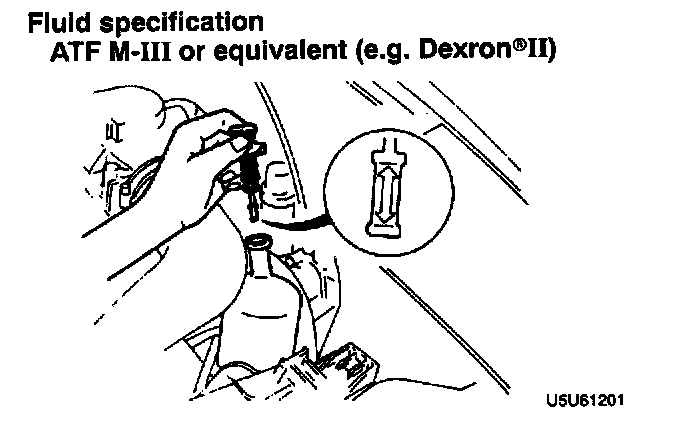

Fluid Level Inspection
FLUID LEVEL INSPECTION1. Verify that the fluid level is between the H and L marks.

2. Add the specified power steering fluid if it is below the L mark. Remove the fluid if it is above the H mark.
Fluid specification ATF M-III or equivalent (e.g. Dexron (R)II)